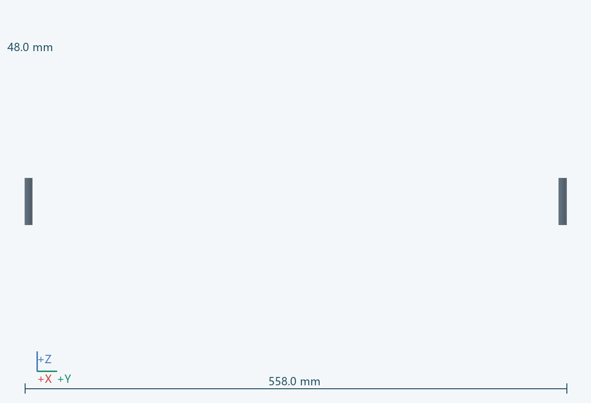
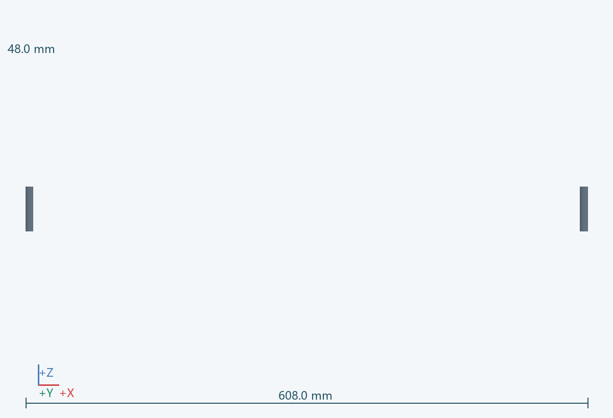
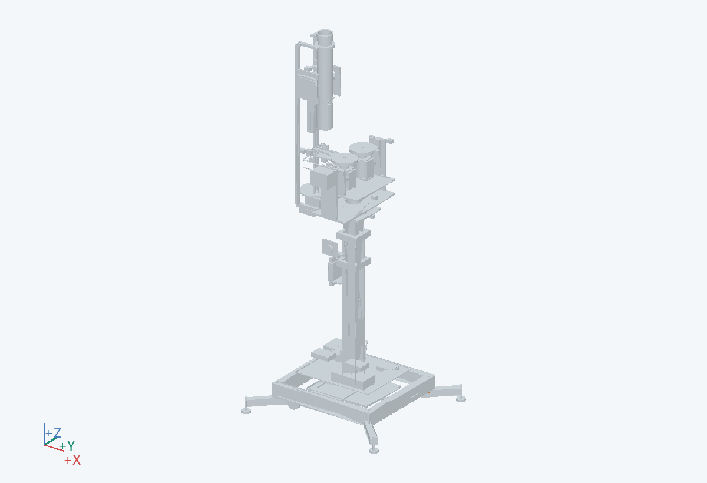

608.0 × 558.0 × 48.0 mm（含所示实例）
训练时扩大支撑多边形；搬运时收回。
内端接 0101，外端接 0104；实际枢轴与伸出量由支撑点坐标反算。
金属方管、锁销与连接耳板
拔维护销后按独立支腿图拆出。
检查收纳时与搬运轮、电线的冲突，以及展开未锁定时的状态提示。 关联：U07
PRT-0103-A__-1_-1, PRT-0103-A__-1_1, PRT-0103-A__1_-1, PRT-0103-A__1_1